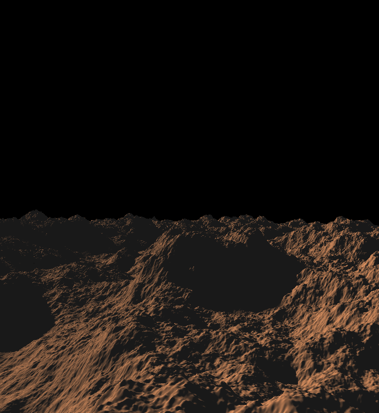
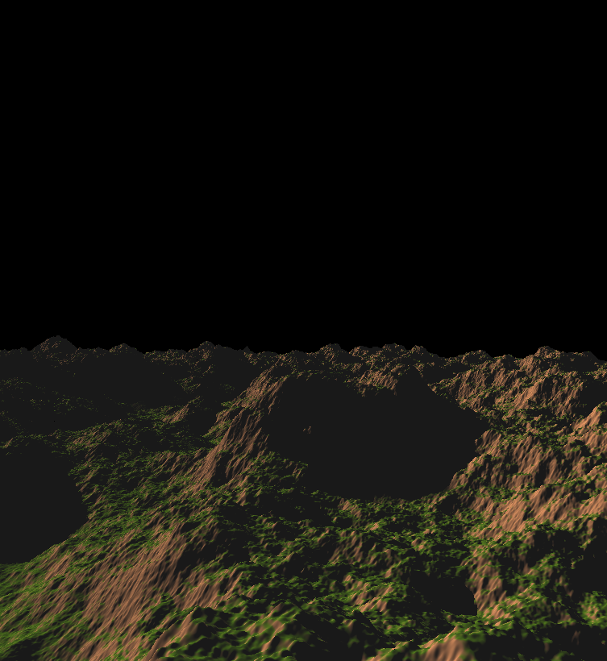
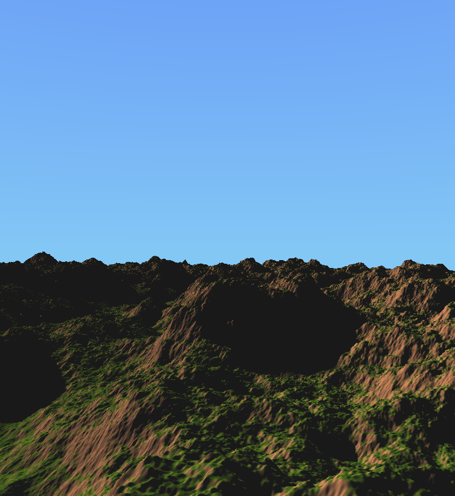
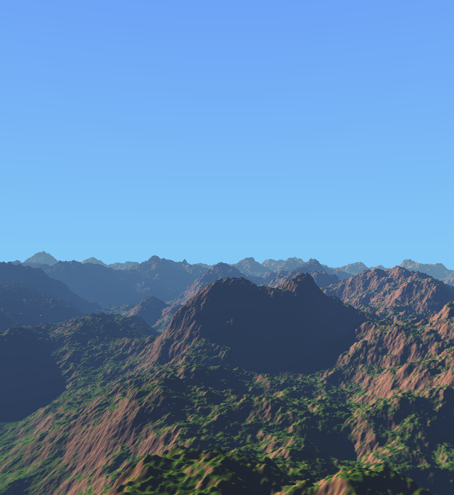
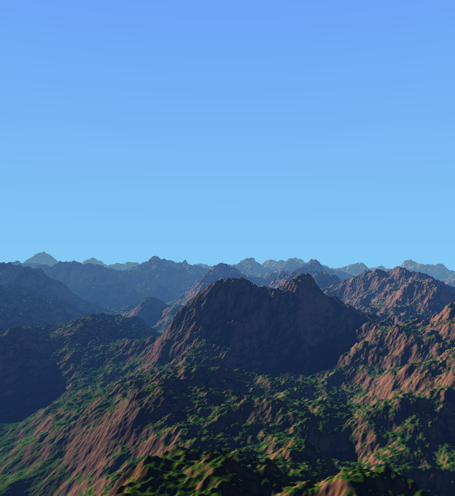
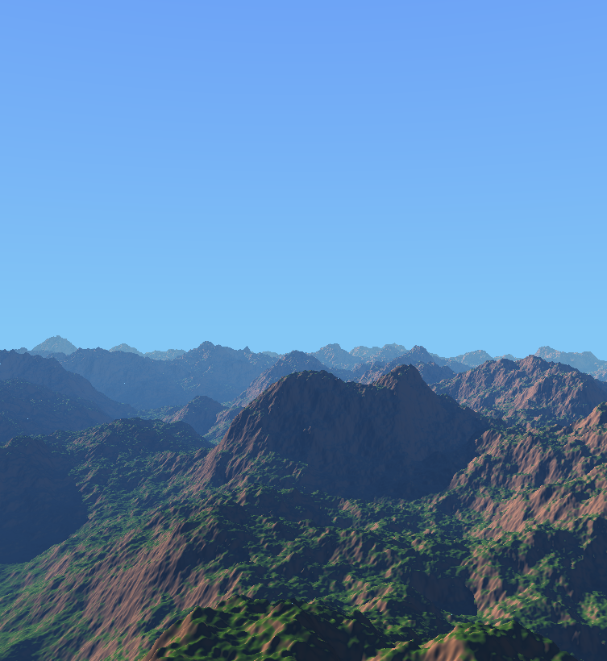
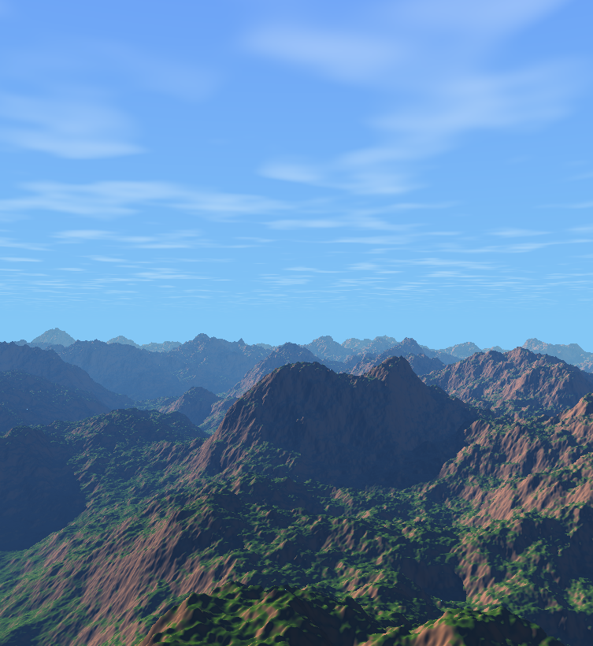
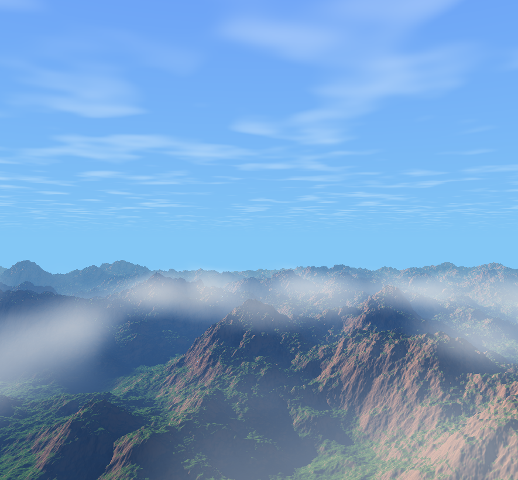

距离上一篇将程序化地形生成的教程也已经过去了一段时间了。前段时间一直有其他事情需要忙，现在终于有时间继续之前未完成的工作了。
丰富地形
上一篇教程我们已经创建出了绵延的山脉，如下图所示：

看起来似乎是有那么点意思了，但是这样的山脉效果还是太单调了。
接下来我们就计划丰富一下这个场景。
增加绿植
我们场景中的山光秃秃的，很像是沙漠，也很像火星上的地貌。
我想给场景增加一些层次，一些生机，因此我打算将山的一部分渲染为绿植部分。
那么如何确定哪些部分是绿植，哪些部分是裸露的山体呢？根据地形表面的法线可以做一个简单的判定：法线的y分量越大，也就是面向上的分量越大，表明这个面更平，因此有绿植是更合适的；反正则表明这个面更加陡峭，更适合作为山体表现。
1
2
3
4
5
6
7
8
9
10
11
12
13
14
| vec3 dirt_color = vec3(0.8549, 0.5255, 0.3098);
vec3 grass_color = vec3(0.3137, 0.5412, 0.0157);
if(rd.y < 0.05 && rayMarchingTerrain(ro, rd, maxt, res_t))
{
vec3 height_pos = ro+res_t*rd;
vec3 normal = getNormal(height_pos);
float grass_ratio = smoothstep(0.7, 0.98, normal.y);
vec3 ground_color = mix(dirt_color, grass_color, grass_ratio);
}
|
上面是一段实例代码，我们预先设定山体和绿植的颜色，在光线步进山体的时候，获取normal，根据法线的y方向的大小（也可以用dot来判定）做smoothstep取一个合适的值作为当前平面草地的比例，最后混合山体和草地的比例。得到的结果如下：

这样一来场景的丰富程度一下子就提升了。
天空
现在最终结果还是挺奇怪的，很大一部分的原因是场景的背景还是黑咕隆咚的。我们的大场景急需增加天空的部分。
天空的颜色
天空的颜色我之前有写过一个教程，是利用单次散射的方法来计算天空大气的颜色。当然这个方法在这依然是可用的。
不过如果你说，我不想用那么复杂的方法，只想快速出效果呢？那也是很简单，给地形光线步近没有结果的像素设定为蓝色就行了，哈哈。
如果想再复杂一点，可以做一个小细节的优化。也就是在晴朗的情况下，一般靠近地平线的天的蓝色是更加浅的，所以在给天空像素上色的时候，可以根据当前像素的方向的y值作为判定，在深蓝色和浅蓝色做线性插值。
1
2
3
4
| vec3 low_sky_blue = vec3(0.5137, 0.7804, 0.9608);
vec3 high_sky_blue = vec3(0.3216, 0.4706, 0.9725);
vec3 sky_color = mix(low_sky_blue, high_sky_blue, clamp(rd.y, 0.0, 1.0));
|

雾气增强层次感
在增加了天空之后，我们的渲染结果有了很显著的提升，终于像室外的场景了。
不过仔细看后，还是觉得怪怪的，远处的山和天空根本不在一个图层上；山的远近层次感也不足，远处的山太清晰了。
这是因为缺少雾气的结果，雾气能够很好的增加大场景体量感，能够很好的处理场景和天空衔接的感觉。
增加雾气也十分简单，仅需根据地形光线步近的结果的大小（也就是地形离相机的距离）来计算一个比例，根据这个比例来做场景颜色和雾气颜色的插值即可。
1
2
3
4
5
6
7
8
9
|
vec3 calcFog(float dist)
{
return exp(-5e-3*dist*vec3(1,2,4));
}
vec3 fog_amount = calcFog(res_t);
color = mix(vec3(0.7),color, fog_amount);
|
上面这段便是雾气的计算过程。雾气的比例通过**exp(-5e-3distvec3(1,2,4))**计算，得到的雾的比例用于最终颜色的线性插值。

有了雾气的加持，我们场景的大体量感就有了，层次感也明显了很多。
关于雾气的更多内容，可以参考Inigo大神的这篇文章。
漫反射光照细节
接下来我想优化一下场景整体的漫反射细节。
当前的渲染结果其实是有加一个默认的环境光**vec3(0.1)**的，主要是之前的场景太黑了。这是个临时的处理，把这个环境光去掉。
好了，我们再来看一下我们的场景。有没有感觉山体的阴影部分有点太黑了？是的，在现实世界中，处于阴影的场景，在大白天也会被场景的漫反射光给提亮的，这种一片漆黑的感觉是有些难看。所以接下来我们来增加一些场景中应该有的漫反射光。
首先山体之间是会有漫反射光的影响的，也就是阴影部分的山体会被不在阴影的其他山的漫反射光照亮。当然这种影响我们是无法实时计算的，要计算的东西实在是太多了。但是可以通过一个很简单的方式来提单：我们计算当前点的发现和指向光源方向的点乘，当这个结果大于0的时候，用这个乘积乘以一个小的光照并加到原本的颜色上。
1
| color += (max(0.0, dot(-light_dir, normal))*ground_color/10.0);
|

加完地形的漫反射光后，天空其实也有各个方向的漫反射的光会影响地形的亮度。天空的漫反射光可以通过地形法线的y分量和天空颜色的一部分来计算，示例代码如下：
1
| color += (normal.y + 1.0)/2.0*low_sky_blue/10.0;
|

增加了这些漫反射细节，场景的真实度进一步得到了提升。
云朵
有了天空，再给天空上增加云的话会进一步增加场景的丰富度，下面就来介绍我给这个场景添加的两部分云的计算。
高层云
我给这个场景添加了两种云，高层云是我想模拟在高度很高的地方，云层看起来不厚并且相对静态的感觉。
高层云的纹理也是利用perlin noise来计算，由于高层的云没有厚实感其实用2D的perlin noise也足够了。
另外需要注意的是，云的纹理需要根据远近来做处理。远处的云的纹理如果太清晰的话在最终效果上会显得太过于密集。下面是高层云的示例代码：
1
2
3
4
5
6
7
8
9
10
11
12
13
14
15
16
17
18
19
20
21
22
23
24
25
26
27
28
|
float top_sky_plane = 3000.;
vec3 getSkyColor(vec3 ro, vec3 rd)
{
vec3 hit_sky;
hit_sky.y = top_sky_plane;
hit_sky.xz = ro.xz + rd.xz * (top_sky_plane - ro.y)/rd.y;
float hit_dist = distance(hit_sky, ro);
float cloud_density_percentage = 1.0;
if(hit_dist > cloud_view_distance)
{
cloud_density_percentage *= exp(-(hit_dist - cloud_view_distance)/ cloud_view_distance);
}
float cloud_density = smoothstep(getCloudDensity(hit_sky.xz/150.0, 3), -0.99, 1.9)*cloud_density_percentage * 0.5;
float res_t;
vec3 sky_color = mix(low_sky_blue, high_sky_blue, clamp(rd.y, 0.0, 1.0));
vec3 cloud_color = vec3(1.);
return mix(sky_color, cloud_color, cloud_density);
}
|

增加了高层云之后，天空就显得不那么单调了。
体积云
最后就是体积云了，体积云的部分我不会在这里详细讨论，这是一个可以讨论的比较深的话题。我这个场景的体积云效果也并不是很理想，这里仅作为一个最后的点缀，在山峰上增加一点点动态效果。
体积云的效果其实也是在一定区域内进行多个点的采样而来，这个区域内利用FBM来实现云的动态的随机效果。在这个场景内我使用了SDF来圈定体积云的范围，并且给SDF增加了随机现状来获取更好的随机效果。
1
2
3
4
5
6
7
8
9
10
11
12
13
14
15
16
17
18
19
20
21
22
23
24
25
26
27
28
29
30
31
32
33
34
35
36
37
38
39
| float scene(in vec3 pos)
{
vec3 cloud_pos = vec3(0.0, 5.0, 15.0);
vec3 filter_pos = vec3(pos.x, pos.y+iTime, pos.z+iTime);
pos -= cloud_pos;
float rst = -(rm_box(pos)) + fbm_cloud(pos * 0.1+iTime*0.3, 5);
rst = rst / 25.0 * max(fbm_cloud(filter_pos*0.1, 1) - 1.2, 0.0);
return rst;
}
float max_cloud_dist = 80.;
vec4 renderMidClouds(vec3 ro, vec3 rd)
{
vec4 res = vec4(0.0);
float depth = 0.0;
int sample_count = 64;
float dt = max_cloud_dist / float(sample_count);
for(int i = 0; i < sample_count; ++i)
{
vec3 p = ro + depth*rd;
float density = scene(p);
if(density > 0.0)
{
float diffuse = clamp((scene(p) - scene(p + 0.3*light_dir))/0.3, 0.0, 1.0);
vec3 lin = vec3(0.8, 0.8, 0.8) * 1.1 + 0.8 * vec3(0.9333, 0.702, 0.5255)*diffuse;
vec4 color = vec4(mix(vec3(1.0), vec3(0.0), density), density);
color.rgb *= color.a;
res += color * (1.0 - res.a);
}
depth+=dt;
}
return res;
}
|

最终效果
以上便是我如何实现这个场景的简单介绍了。这是我初次尝试在ShaderToy上渲染大场景，也是第一次将整个步骤拆解讲解，可能还是会有不少地方讲的不过仔细和通透，也有些遗漏。
后面我还是会继续尝试创作和讲解，希望能给人带来帮助，也有助于巩固我所学的知识。